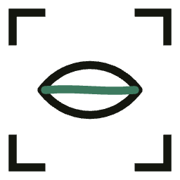

Ocimum Studio — Référence d'export
PNG transparents, valeurs hex exactes et polices — prêts à intégrer dans vos filtres ffmpeg (drawtext, overlay). Tous les fichiers sont dans export-assets/.

mark-dark-128.png
mark-dark-512.png
mark-bright-256.pngFond transparent, trait épaissi (~3.5% de la taille) pour tenir à la compression H.264. Dark = trait crème / accent basilic. Bright = trait encre / accent basilic foncé, pour incruster sur un fond clair.
ffmpeg -i input.mp4 -i export-assets/mark/mark-dark-256.png \ -filter_complex "[0:v][1:v] overlay=W-w-48:48" \ -c:a copy out.mp4 ffmpeg -i input.mp4 \ -vf "drawtext=fontfile=Inter-Medium.ttf:text='OCIMUM STUDIO':\ fontcolor=0xF0EDE8:fontsize=28:x=48:y=H-80" \ -c:a copy out.mp4
Pour le tracking serré des titres Syne, ffmpeg n'a pas de paramètre letter-spacing natif — pré-espacer la chaîne ou utiliser un sous-titre ASS/libass si le rendu doit rester fidèle.